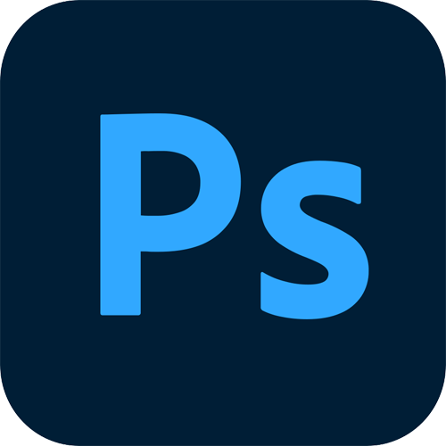
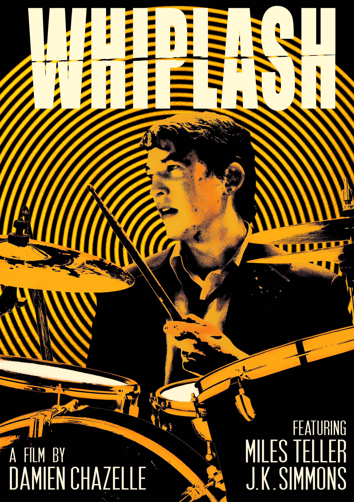

Photoshop
This project was created for my ARS 103 course as a redesign poster for the film Whiplash. I focused on color grading and the use of the threshold effect to create an intense, gritty aesthetic that reflects the film's themes and atmosphere.